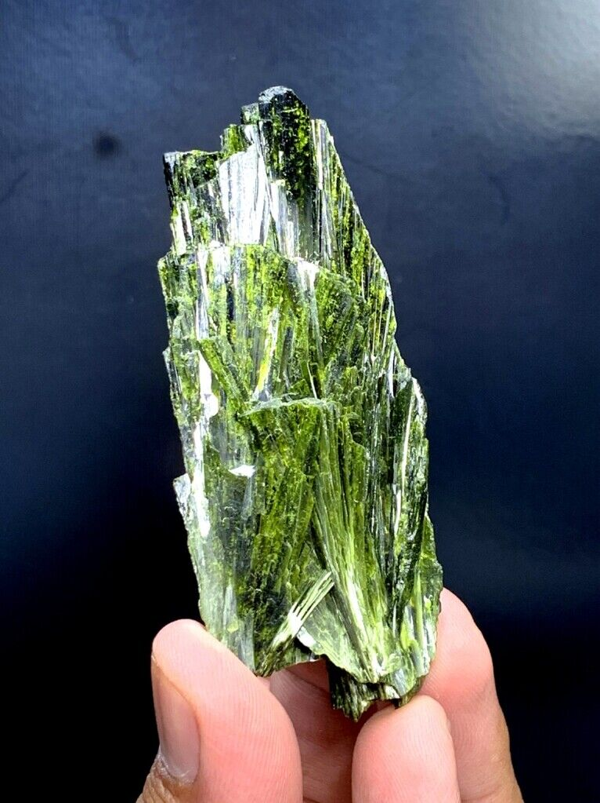
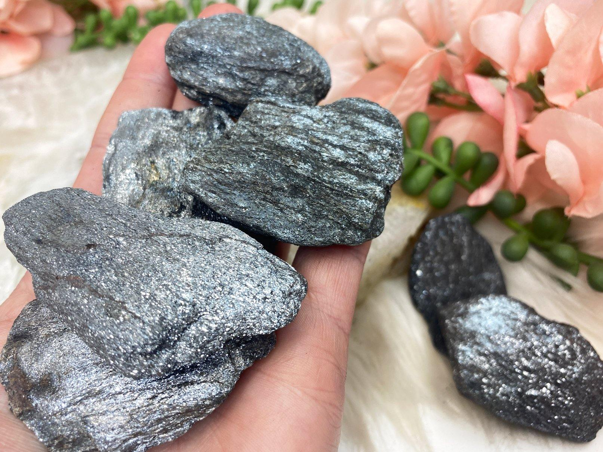
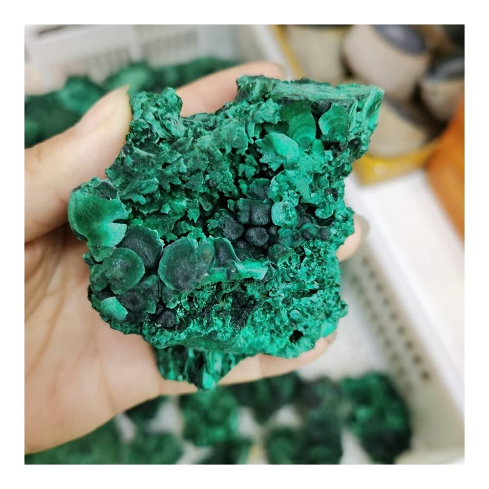

New here?

New to rockhounding and don't know where to start? Not to worry, we will show you the ropes. Click below to head over to our "Getting Started" guide
Getting StartedRocks & Minerals In Wisconsin


Wisconsin offers a wealth of rockhounding experiences, from hunting for Lake Superior agates along the shores of the Great Lake to searching for quartz and other minerals in the Baraboo Range. The state's rich mining history also provides opportunities for those interested in exploring the geological remnants of Wisconsin's mineral extraction industry.
Sponsored Dig Site

Own a digsite you would like to advertize in Wisconsin? Contact us for more information about being our sponsor of the month! Email sponsors@rockhounding.org for more information.
Dig With UsPopular Rocks In Wisconsin
-
 Jasper
JasperJasper can be found in various locations across Wisconsin, particularly in gravel deposits and streambeds.
Read More -

Epidote
Epidote can be found in Wisconsin, particularly in the Baraboo Iron Range and other metamorphic and igneous rock areas.
Read More -
 Trilobite
TrilobiteTrilobite fossils can be found in Wisconsin, especially in the southwestern part of the state where sedimentary rocks are exposed.
Read More -

Hematite
Hematite can be found in Wisconsin, particularly in the Gogebic Iron Range and the Baraboo Iron Range.
Read More -
 Amethyst
AmethystAmethyst can be found in Wisconsin, particularly in the northern part of the state near Lake Superior, where it is often found in veins and cavities of volcanic rocks.
Read More -
 Calcite
CalciteCalcite can be found in various locations across Wisconsin, particularly in limestone and dolomite deposits.
Read More -
 Gypsum
GypsumGypsum can be found in Wisconsin, particularly in the eastern part of the state where sedimentary rock formations are exposed.
Read More -
 Crinoid
CrinoidCrinoid fossils can be found in Wisconsin, especially in the southwestern part of the state where limestone and other sedimentary rocks are exposed.
Read More -
 Sulfur
SulfurSulfur can be found in Wisconsin, particularly in areas with sulfur-rich mineral deposits and hot springs.
Read More -

Malachite
Malachite can be found in Wisconsin, particularly in the northern part of the state in areas with copper deposits.
Read More
Popular Areas In Wisconsin
-
 Geode State Park
Geode State ParkGeode State Park, located near Burlington, is a popular destination for rockhounds looking to collect geodes. The park offers a unique experience, allowing visitors to crack open geodes and discover the beautiful crystals hidden inside.
Read More -
 Wisconsin Geological Society
Wisconsin Geological SocietyThe Wisconsin Geological Society is an organization for rock, mineral, and fossil enthusiasts in the state. They host field trips, lectures, and workshops throughout the year, providing ample opportunities to explore Wisconsin's geological treasures.
Read More -
 Dells of the Wisconsin River
Dells of the Wisconsin RiverThe Dells of the Wisconsin River, a popular tourist destination, offers stunning rock formations and opportunities for rockhounding. Visitors can find unique minerals, such as quartz and calcite, within the sandstone cliffs and along the riverbanks.
Read More -
 Cave of the Mounds
Cave of the MoundsCave of the Mounds, a National Natural Landmark near Blue Mounds, offers visitors the opportunity to explore stunning geological formations, including stalactites, stalagmites, and other mineral deposits. The site also features a gift shop where visitors can purchase unique minerals and fossils.
Read More
Geology of Wisconsin
Wisconsin's geology is a mix of ancient Precambrian rock formations, including some of the oldest rocks on Earth, and younger sedimentary rocks formed during the Paleozoic Era. The state's landscape was heavily influenced by glaciation during the Pleistocene Epoch, which sculpted its rolling hills, moraines, and the Great Lakes shoreline.
The state is known for its deposits of copper, lead, zinc, and other minerals, as well as for its diverse range of geological formations. Wisconsin's Baraboo Range, for example, is home to unique quartzite formations, while the shores of Lake Superior offer opportunities to find the famous Lake Superior agates.
Wisconsin's geology provides ample opportunities for rockhounding, from hunting for agates along the Great Lakes shoreline to exploring the mineral-rich Baraboo Range and the remnants of the state's mining history.